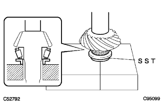
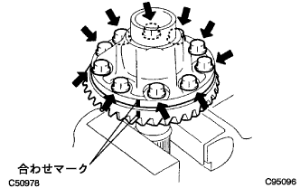
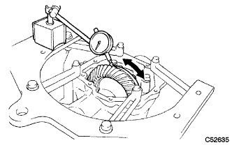
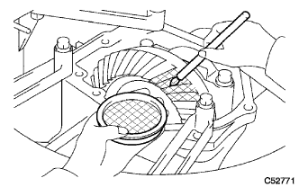
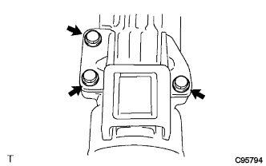

トランスファASSY（4WD） 組み付け |
| 1. トランスファ ドリブンピニオン ベアリング RR取り付け |
SSTおよびプレスを使用して、ドリブンピニオンベアリングRR（アウターレース）をケースに圧入する。
 |
ドリブンピニオンベアリングRR（アウターレース）にギヤオイルスーパーを塗布する。
| 2. トランスファ アウトプットシャフトワッシャ取り付け |
トランスファアウトプットシャフトワッシャをケースに取り付ける。
トランスファアウトプットシャフトワッシャにギヤオイルスーパーを塗布する。
| 3. トランスファ ドリブンピニオン ベアリング FR取り付け |
図の位置にギヤオイルスーパーを塗布する。
 |
SST、ボルトおよびナットを使用して、ドリブンピニオンベアリングFR（アウターレース）をケースに取り付ける。
|  |
SSTおよびプレスを使用して、ドリブンピニオンベアリングFR（インナーレース）をドリブンピニオンに圧入する。
ドリブンピニオンベアリングFRにギヤオイルスーパーを塗布する。
| 4. ドリブンピニオン取り付け |
 |
ドリブンピニオンをケースに取り付ける。
 |
新品のピニオンベアリングスペーサおよびドリブンピニオンベアリングRR（インナーレース）をドリブンピニオンに取り付ける。
ドリブンピニオンベアリングRRにギヤオイルスーパーを塗布する。
新品のトランスファギヤナットのねじ部および座面にハイポイドギヤオイルLSDを軽く塗布し、SSTを使用して、ドリブンピニオンプレロード調整トルク下限値でトランスファギヤナットを取り付ける。
| 5. ドリブンピニオンプレロード調整 |
 |
SSTおよびトルクレンチを使用して、ドリブンピニオンの起動トルクを測定する。
| ベアリング | ドリブンピニオンプレロード |
|---|---|
| 新品時 | 0.69-1.27N·m｛7.0-13.0kgf·cm｝ |
| 新品時 | 0.43-0.81N·m｛4.4-8.3kgf·cm｝SSTおよびトルクレンチSF3N使用時 |
| 再使用時 | 0.39-0.69N·m｛4.0-7.0kgf·cm｝ |
| 再使用時 | 0.25-0.44N·m｛2.5-4.5kgf·cm｝SSTおよびトルクレンチSF3N使用時 |
| 6. リングギヤ取り付け |
リングギヤを熱湯で90-100°Cに加熱する。
リングギヤとリングギヤマウンティングケースの合わせ面の油脂および水分を十分に清掃する。
 |
リングギヤマウンティングケースのねじ穴を清掃する。
|  |
リングギヤとリングギヤマウンティングケースの合わせマークを合わせ、素早く取り付ける。
ボルト10本で締め付ける。
| 7. リングギヤマウンティングケース ベアリング取り付け |
SSTおよびプレスを使用して、リングギヤマウンティングケースベアリングRH（インナーレース）をリングギヤマウンティングケースに圧入する。
リングギヤマウンティングケースベアリングRH（アウターレース）をリングギヤマウンティングケースに取り付ける。
 |
リングギヤマウンティングケースベアリングRHにギヤオイルスーパーを塗布する。
 |
SSTおよびプレスを使用して、リングギヤマウンティングケースベアリングLH（インナーレース）をリングギヤマウンティングケースに圧入する。
リングギヤマウンティングケースワッシャをケースに取り付ける。
SSTおよびプレスを使用して、リングギヤマウンティングケースベアリングLH（アウターレース）をケースに圧入する。
リングギヤマウンティングケースベアリングLHにギヤオイルスーパーを塗布する。
| 8. トランスファ リングギヤ マウンティングケース取り付け |
 |
リングギヤマウンティングケースをケースに取り付ける。
| 9. トランスファ アウトプットシャフト スペーサ NO.1取り付け |
スペーサを図のように、ケースの穴とスペーサの切り欠きを合わせて取り付ける。
| 10. トランスファリングギヤマウンティングケース ワッシャ NO.2取り付け |
ブラスバーおよびハンマーを使用して、トランスファリングギヤマウンティングケースワッシャNo.2を取り付ける。
 |
ボルト2本で、ベアリングキャップを取り付ける。
| 11. バックラッシュ点検 |
ダイヤルゲージをリングギヤの歯面に直角に当て、ドリブンピニオンを固定しリングギヤを動かして点検する。
|  |
基準値外の場合は、リングギヤマウンティングケースベアリングLH（アウターレース）側のワッシャ（リングギヤマウンティングケースワッシャ）を表から選択し、再度取り付けて基準値にする。
| 品番 | 板厚［ｍｍ］ | 識別マ－ク |
|---|---|---|
| 36265-21350 | 2.05 | 50 |
| 36265-21360 | 2.80 | 51 |
| 36265-21370 | 2.11 | 52 |
| 36265-21380 | 2.14 | 53 |
| 36265-21390 | 2.17 | 54 |
| 36265-21400 | 2.20 | 55 |
| 36265-21410 | 2.23 | 56 |
| 36265-21420 | 2.26 | 57 |
| 36265-21430 | 2.29 | 58 |
| 36265-21440 | 2.32 | 59 |
| 36265-21450 | 2.35 | 60 |
| 36265-21460 | 2.38 | 61 |
| 36265-21470 | 2.41 | 62 |
| 36265-21480 | 2.44 | 63 |
| 36265-21490 | 2.47 | 64 |
| 36265-21500 | 2.50 | 65 |
| 36265-21510 | 2.53 | 66 |
| 36265-21520 | 2.56 | 67 |
| 36265-21530 | 2.59 | 68 |
| 36265-21540 | 2.62 | 69 |
| 36265-21550 | 2.65 | 70 |
| 36265-21560 | 2.68 | 71 |
| 36265-21570 | 2.71 | 72 |
| 36265-21580 | 2.74 | 73 |
| 36265-21590 | 2.77 | 74 |
| 36265-21600 | 2.80 | 75 |
| 36265-21610 | 2.83 | 76 |
| 36265-21620 | 2.86 | 77 |
| 36265-21630 | 2.89 | 78 |
| 36265-21640 | 2.92 | 79 |
| 36265-21650 | 2.95 | 80 |
| 36265-21660 | 2.98 | 81 |
| 36265-21670 | 3.01 | 82 |
| 36265-21680 | 3.04 | 83 |
| 36265-21690 | 3.07 | 84 |
 |
リングギヤマウンティングケースワッシャ（バックラッシュ調整用）の位置を図に示す。
| 12. リングギヤとドリブンピニオンの歯当たり点検 |
リングギヤの歯面両側に光明丹を全歯に均一に薄く塗布し、リングギヤを数回、正回転、逆回転させる。
歯当たり位置が図の正しい歯当たりの範囲に入っていることを確認する。
フェース当たり、フランク当たりの場合は、以下の作業を行う。
バックラッシュ調整用ワッシャ（リングギヤマウンティングケースワッシャ）により、リングギヤを移動させて調整する。(*1)
リングギヤとドリブンピニオンの歯当たり点検を再度行う。
 |
リングギヤとドリブンピニオンのバックラッシュ点検を行う。
ヒール当たり、トー当たりの場合は、以下の作業を行う。
トランスファドリブンピニオンベアリングFR（アウターレース）側のワッシャ（トランスファアウトプットシャフトワッシャ）を表より選択し、再度取り付ける。
| 品番 | 板厚［ｍｍ］ | 識別マ－ク |
|---|---|---|
| 36275-33010 | 2.10 | AA |
| 36275-33030 | 2.12 | AC |
| 36275-33050 | 2.14 | BB |
| 36275-33070 | 2.16 | CA |
| 36275-33090 | 2.18 | CC |
| 36275-33110 | 2.20 | DB |
| 36275-33130 | 2.22 | EA |
| 36275-33150 | 2.24 | EC |
| 36275-33170 | 2.26 | FB |
| 36275-33190 | 2.28 | GA |
| 36275-33210 | 2.30 | GC |
| 36275-33230 | 2.32 | HB |
| 36275-33250 | 2.34 | JA |
| 36275-33270 | 2.36 | JC |
| 36275-33290 | 2.38 | KB |
| 36275-33310 | 2.40 | LA |
| 36275-33330 | 2.42 | LC |
| 36275-33350 | 2.44 | MB |
| 36275-33370 | 2.46 | NA |
| 36275-33390 | 2.48 | NC |
| 36275-33410 | 2.50 | PB |
| 36275-33430 | 2.52 | QA |
| 36275-33450 | 2.54 | QC |
トランスファアウトプットシャフトワッシャ（歯当たり調整用）の位置を図に示す。
| 13. 総合プレロード調整 |
SSTおよびトルクレンチを使用して、ドリブンピニオンとリングギヤの歯面を当てた状態で起動トルク（総合プレロード）を測定する。
| ベアリング | ピニオンプレロード |
|---|---|
| 新品時 | ドリブンピニオンプレロード+0.39-0.59N·m｛4.0-6.0kgf·cm｝ |
| 新品時 | ドリブンピニオンプレロード+0.24-0.37N·m｛2.4-3.8kgf·cm｝SSTおよびトルクレンチSF3N使用時 |
| 再使用時 | ドリブンピニオンプレロード+0.25-0.44N·m｛2.5-4.5kgf·cm｝ |
| 再使用時 | ドリブンピニオンプレロード+0.16-0.28N·m｛1.6-2.9kgf·cm｝SSTおよびトルクレンチSF3N使用時 |
 |
プレロードが基準値外の場合は、リングギヤマウンティングケースベアリングRH（アウターレース）側のワッシャ（トランスファリングギヤマウンティングケースワッシャNo.2）を表から選択し、再度組み付ける。
| 品番 | 板厚［mm］ | 識別マ－ク |
|---|---|---|
| 36266-33010 | 2.47 | A0 |
| 36266-33020 | 2.50 | A1 |
| 36266-33030 | 2.53 | A2 |
| 36266-33040 | 2.56 | A3 |
| 36266-33050 | 2.59 | A4 |
| 36266-33060 | 2.62 | A5 |
| 36266-33070 | 2.65 | A6 |
| 36266-33080 | 2.68 | A7 |
| 36266-33090 | 2.71 | A8 |
| 36266-33100 | 2.74 | A9 |
| 36266-33110 | 2.77 | B0 |
| 36266-33120 | 2.80 | B1 |
| 36266-33130 | 2.83 | B2 |
| 36266-33140 | 2.86 | B3 |
| 36266-33150 | 2.89 | B4 |
| 36266-33160 | 2.92 | B5 |
| 36266-33170 | 2.95 | B6 |
| 36266-33180 | 2.98 | B7 |
| 36266-33190 | 3.01 | B8 |
| 36266-33200 | 3.04 | B9 |
| 36266-33210 | 3.07 | C0 |
| 36266-33220 | 3.10 | C1 |
| 36266-33230 | 3.13 | C2 |
| 36266-33240 | 3.16 | C3 |
| 36266-33250 | 3.19 | C4 |
| 36266-33260 | 3.22 | C5 |
| 36266-33270 | 3.25 | C6 |
| 36266-33280 | 3.28 | C7 |
| 36266-33290 | 3.31 | C8 |
| 36266-33300 | 3.34 | C9 |
| 36266-33310 | 3.37 | D0 |
| 36266-33320 | 3.40 | D1 |
| 36266-33330 | 3.43 | D2 |
| 36266-33340 | 3.46 | D3 |
| 36266-33350 | 3.49 | D4 |
| 36266-33360 | 3.52 | D5 |
| 36266-33370 | 3.55 | D6 |
| 36266-33380 | 3.58 | D7 |
| 36266-33390 | 3.61 | D8 |
| 36266-33400 | 3.64 | D9 |
| 36266-33410 | 3.67 | E0 |
| 36266-33420 | 3.70 | E1 |
| 36266-33430 | 3.73 | E2 |
| 36266-33440 | 3.76 | E3 |
| 36266-33450 | 3.79 | E4 |
| 36266-33460 | 3.82 | E5 |
 |
トランスファリングギヤマウンティングケースワッシャNo.2（プレロード調整用）位置を図に示す。
バックラッシュ点検を再度行う。
リングギヤとドリブンピニオンの歯当たり点検を再度行う。
 |
マイナスドライバーおよびハンマーを使用して、トランスファギヤナットをかしめる。
| 14. トランスファ ケース オイルシール RH取り付け |
SSTおよびハンマーを使用して、新品のオイルシールを図の位置までケースに打ち込む。
 |
オイルシールのリップ部に少量のMPグリースNo.2を塗布する。
| 15. トランスファ ケース オイルシール取り付け |
SSTおよびハンマーを使用して、新品のオイルシールを図の位置までケースに打ち込む。
オイルシールのリップ部に少量のMPグリースNo.2を塗布する。
| 16. トランスファ エクステンション ハウジング オイルシール取り付け |
SSTおよびハンマーを使用して、新品のオイルシールを図の位置までエクステンションハウジングに打ち込む。
オイルシールのリップ部に少量のMPグリースNo.2を塗布する。
| 17. トランスファエクステンションハウジングダスト デフレクタ取り付け |
SSTおよびプレスを使用して、新品のダストデフレクタをエクステンションハウジングに取り付ける。
| 18. トランスファ エクステンション ハウジング取り付け |
白ガソリンでハウジングの合わせ面を脱脂する。
エクステンションハウジングの図の位置にシールパッキン1281をビード状(φ1.2mm)に連続して塗布する。
 |
ボルト4本で、エクステンションハウジングをケースに取り付ける。
| 19. トランスファASSY取りはずし |
オーバーホールアタッチメントからトランスファASSYを取りはずす。
| 20. トランスファ ケース ストレートピン取り付け |
プラスチックハンマーを使用して、ケースの図の位置にストレートピンを打ち込む。
| 21. トランスファダイナミック ダンパ取り付け |
|  |
ボルト3本で、ダイナミックダンパをエクステンションハウジングに取り付ける。
| 22. トランスファ ケース カバー NO.1取り付け |
白ガソリンでケースカバーのあわせ面を脱脂する。
 |
ケースカバーの図の位置にシールパッキン1281をビード状(φ1.2mm)に連続して塗布する。
 |
ボルト8本で、ケースカバーをケースに取り付ける。
| 23. トランスファ ケース ブリーザプラグ取り付け |
SSTを使用して、新品のブリーザプラグを打ち込む。
| 24. トランスファドレン プラグ取り付け |
 |
新品のガスケットを介して、トランスファドレーンプラグを取り付ける。
| 25. トランスファケース プラグ NO.1取り付け |
 |
新品のガスケットを介して、トランスファケースプラグNo.1（フィラープラグ）を取り付ける。
| 26. トランスファケース プラグ NO.2取り付け |
 |
新品のガスケットを介して、トランスファケースプラグNo.2（フィラープラグ）を取り付ける。
| 27. トランスファ ＆ トランスアクスル セッティングスタッドボルト取り付け |
ケースの図の位置にスタッドボルトを取り付ける。